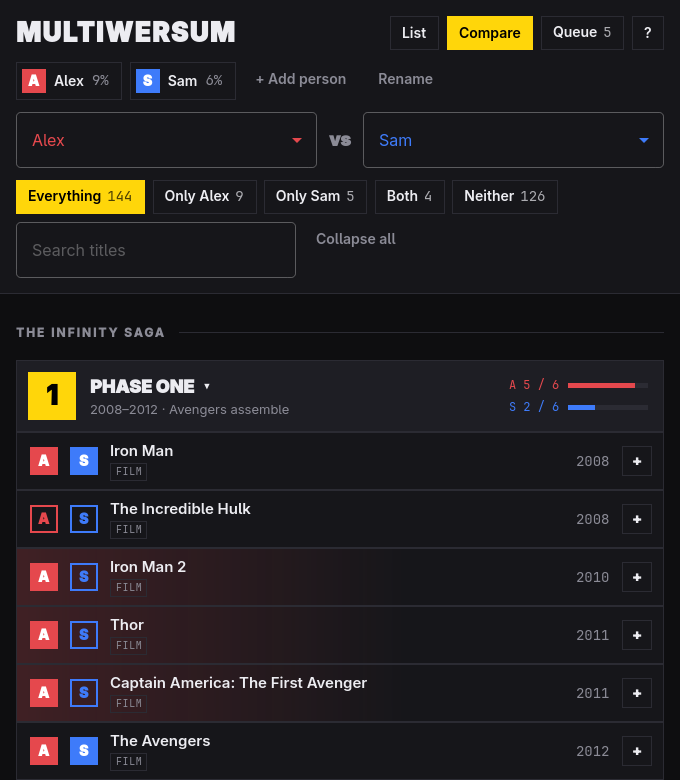

A small offline desktop app: one shared checklist of every Marvel film and series, tick marks per person, a side-by-side comparison, and a queue of what to watch next.

One person's ticks across the whole catalog — phases 1–6, Netflix & ABC shows, even Sony/Fox Marvel. Progress bars, search, filters.
Two people side by side: only A has seen it, only B, both, or neither. Perfect for settling “what do we watch tonight”.
One shared, ordered “next up” list with a tick per person. One button adds the next MCU title nobody has seen yet.
C++/Qt Quick built the Omarchy way: follows your desktop accent and window rounding live, speaks your language (English & Polish included), fully keyboard-driven. No account, no cloud — one JSON file in your home dir.
| ↑ ↓ | navigate rows |
| Space | toggle a tick for the active person |
| 1–4 | switch active person (up to four) |
| / | search titles |
| Ctrl+Z | undo (redo with Ctrl+Shift+Z) |
| ? | show all shortcuts · Esc closes |
git clone https://github.com/cyganowak/multiwersum cd multiwersum/pkgbuild makepkg -si # then: Super+Space → Multiwersum
Requires Qt 6 (base, declarative, wayland). Built and tested on Arch; should build anywhere with Qt 6 and qmake6.